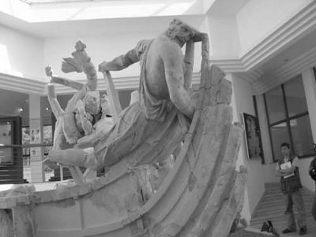

On yıl süreyle Troya'da savaştıktan sonra kral Odisseus ülkesine dönerken mola verdiği bir adada, denizler tanrısı Poseydon'un denizlere bekçilik eden oğlu Tepegöz yamyam Polifemos'un (Polyphemos) zaten tek olan gözünü kör etti. Çünkü Polifemos onu çiğ çiğ yemeğe kalkmıştı! Babası tanrı Poseydon da haliyle Odisseus'a karşı tepeden tırnağa öfke kesildi. Bu yüzden onun gemilerini ve arkadaşlarını denizin dibine batırdı. Odisseus da birkaç tahta parçasından yaptığı uyduruk bir sal üstünde, baygın ve yaralı olarak tanrıça Kalipso'nun (Kalypso) adasına rastgele sığınabildi...
Ne var ki tanrıça Kalipso, adasına sığınan bu ölümlü Odisseus'a daha ilk günden sırılsıklam vuruluverdi!.. Bu yüzden tam yedi yıldır da onu bir türlü bırakmıyordu adasından. Odisseus da her gün tek başına sahile yakın kayalık bir tepeye tırmanıyor; denizin ta ötelerine baka baka, kavuşamadığı karısı, oğlu ve çok özlediği halkı için gözyaşı döküyordu hep...
Odisseus'u çok seven Atena'nın Tanrılar Toplantısı'ndaki ikinci kez sert çıkışı üzerine babası Baştanrı Zeus, Odisseus'u hemen özgür bırakması için haber tanrısı Hermes'le tanrıça Kalipso'ya bir haber gönderdi... Babası tanrı Atlas'ı dünyamızı sonsuza dek iki elleri üstünde taşıma cezasıyla cezalandırdığı için Zeus'a zaten diş bileyen tanrıça Kalipso, buyruğu alır almaz, ona karşı büsbütün kin ve öfke kesildi... Ağzına geleni söyledi. Ne var ki hiçbir tanrı ya da tanrıça, Baştanrı'ya açıktan isyan edemediği için, Kalipso da onun dayatmasına boyun eğmek zorunda kaldı. O yüzden sahile yakın kayalıklarda gözyaşı döken Odisseus'un yanına gitti hemen:
Haydi ağlayıp durma artık karşımda,
Ömrünü boşuna tüketme!
Seni göndereceğim ben kendi ellerimle...
Sağ salim varasın diye baba toprağına.
Yaygın gökte oturan tanrılar varmanı isterlerse tabii...
Odisseus tanrıça Kalipso'nun bu ani kararına çok şaşırdı. Yoksa şaka mı yapıyor diye baktı bir süre yüzüne. Tanrıça Kalipso ciddiydi... Ve deniz ötelerinde oturan karısına, oğluna ulaşabilmesi için tunç baltasıyla keseceği ağaçları yontup düzleyerek, dikine küpeşteli genişçe bir sal yapmasını öğütledi Odisseus'a.
Ekmek, su ve kırmızı şarap da veririm sana;
Açlık çekmeyesin yolculuğunda diye, bol bol veririm...
Ayrıca tertemiz rubalar giydiririm sırtına!
Odisseus bu kez daha da şaşırdı. Çünkü tanrıçanın yapmasını önerdiği o eften püften bir salla, o engin denizleri nasıl aşabilirdi? O saat tanrıların salacağı canavarlar bir solukta yutardı yaptığı salı! Yoksa Kalipso bir tuzak mı hazırlıyordu? Kurnaz ve becerikli Odisseus, içinden geçenleri, yedi yıldır yatağını bölüştüğü sevgilisi tanrıçaya açıkça söyledi. Tanrıça da;
"Seni gidi seni, hiç laf etmezsin boşuna!
Düşünür taşınır, dersin diyeceğini..." dedi gülerek.
Kalipso, cehennemin Stiks Irmağı üstüne ant içtikten sonra içinden hiçbir kötü şey geçemeyeceğini söyledi sevgilisi Odisseus'a. Nasıl bir gemi yapılması gerekiyorsa öyle yapmasını öğütledi. Sonra da mağarasına doğru üzgün üzgün yürümeye başladı... Arkasından da Odisseus... Mağaraya varınca Kalipso, az önce Baştanrı Zeus'un buyruğunu getiren haberci tanrı Hermes'i buyur ettiği özel sedire oturttu Odisseus'u. Yesin içsin diye bir sürü şey koydu önüne. Kendi kurduğu en eski kırmızı şaraptan getirtti yardımcılarına. Sonra da karşısına geçip oturdu. Uzun saçlı tanrıça Kalipso dönüş yolculuğu sırasında, engin ve hasat vermez denizde başından birçok serüvenler geçeceğini söyledi Odisseus'a.
Karın Penelopeya'yı ne kadar özlersen özle,
Bilsen bundan sonra neler çekeceğini,
Kalırdın benimle, bekçi olurdun bu eve...
Üstelik ölümsüz yapardım seni de...
Odisseus, tanrıçaya hak verdiğini ve ona inandığını söyledi. Üstelik çok özlediği karısı Penelopeya'nın haliyle ne güzellikte, ne de boyda bosta bir tanrıçayla yarışamayacağını bildiğini; ne var ki gece gündüz aklının fikrinin de baba toprağında ve halkında olduğunu ekledi sözlerine. Bundan sonraki yolculuğunda da büyük yıkımlara uğrayabilirdi. Ama bunlardan yıldığı yoktu artık! Çünkü yıllardır çok acılar çektiğini, Troya savaşı sırasında, on yıl gece gündüz ölümün o soğuk soluğuyla nasıl yatıp kalktığını anlatmaya çalıştı... Aslında bu savaşa zorla getirildiğini, çünkü savaşları oldum olası sevmediğini de ekledi sözlerine. Bundan sonra da tek amacının, yirmi yıldır ayrı yaşadığı karısı ve artık delikanlı olmuş oğlu Telemahos'u bir an önce görebilmek olduğunu anlatmaya çalıştı. Sonra halkını da çok özlediğini, o anda başına geçen hangi zorbalarla cebelleşiyor olduğunu bilemediğini söyledi.
Bütün bunları konuşurlarken, bütün gece dinlenen güneş tanrısı Helyos'un atları, engin denizin ötelerindeki gökyüzünde günlük koşularına başlamak üzereydiler... Kalipso'yla sevgilisi Odisseus; birlikte geçirdikleri bu uzun gecenin sonunda, erken doğan gül parmaklı Şafak'ı görünce, ağır ağır giyinip kuşanmaya başladılar. Tanrıça Kalipso, kocaman gönüllü sevgilisi Odisseus'un denizlerde tek başına göğüslemek zorunda kalacağı serüvenleri istemeyerek düşününce gözleri yaşardı. Hiçbir şey yokmuş gibi gözyaşlarını saklayıp sapı zeytin ağacından yapılma keskin bir balta tutuşturdu eline. Bir de keser... Sonra onu evin çok ötelerindeki gür ormana götürdü: Kocaman kocaman ağaçlarla tıkabasa doluydu orası; kızılağaçlar, kavaklar, bulutlara değen çamlar... Tanrıça Kalipso, istediği gemiyi gönlünce yapması için sevgilisini bu ağaçlarla baş başa bırakıp mağarasına döndü. Odisseus da yirmi kadar çam ağacı devirdi hemen! Onları yonttu, düzeltti; bazılarını düzgün tahtalara, bazılarını direklere dönüştürdü. Arada tanrıça Kalipso delgi, silgeç gibi gerekli aygıtlar ve yiyecek içecekler de getiriyordu. Bu çalışmalar dört gün sürdü. Gene tanrıçanın getirdiği kalın ve yırtılmaz bezlerle Odisseus, çok güzel ve sağlam bir yelkenli oluşturdu dördüncü günün akşamına doğru. Sonra da bu yelkenliyi, sevgilisi tanrıça Kalipso ile birlikte denize indirdi...
Beşinci günün sabahında şafak tanrıçası Eos; denizleri ve karaları gene maviye, yeşile ve safran sarısına boyarken tanrıça Kalipso da sevgilisi Odisseus'u son kez bir güzel yıkadı; zeytin kokulu rubalar giydirdi... Bir tulum şarap ve koca bir tulum da su yerleştirdi yelkenlisine. Büyük meşin torbalara çeşit çeşit yiyecekler koydu. Ve tanrıça olarak gözyaşlarını göstermeden bu ölümlü sevgilisini yolcu etti canavarlarla kaynaşan uzak denizlere... Ardından da uğurlu ve tatlı bir rüzgâr saldı. Odisseus da buruk bir sevinçle ve tanrıçasının saldığı bu serin rüzgârların eşliğinde yelkenlerini sonuna dek açtı...
Artık sevgilisinin olmadığı bu adada yalnız başına yaşamak istemeyen ölümsüz tanrıça Kalipso, ölümsüzlüğün de başa bir dert olduğunu büyük bir hüzünle, iliklerine dek duyumsadı; ürperdi...

Odisseus gemisinde